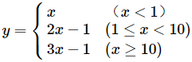

C程序设计实验报告
实验项目：
1、字符与ASCII码
2、运算符与表达式的应用
3、顺序结构应用程序
4、数学函数的算法描述
5、鸡兔同笼的算法描述
6、确定坐标的算法描述
姓名：徐溢璠 实验地点：教学楼514 实验时间：3月19日
一、实验目的与要求
目的：
了解字符在计算机中以ASCII码方式表示；
了解字符的类型、字长其数的表示范围；
熟练使用scanf（）输入用户提供的数据；
熟练使用printf（）输出变量。
要求：
从键盘输入任意字符，且在输入前要求有提示信息。
输出两行：第一行是字符形式输出三个字符，三个字符以逗号隔开，第二行是输出字符对应的ASCII码。
掌握算数运算符的使用；
正确定义程序中的变量；
熟练使用scanf（）输入用户提供的数据；
熟练使用printf（）输出变量。
用if语句根据条件的真假进行判断；
掌握运算符的运算规则。
用if语句根据条件的真假进行判断；
掌握运算符的运算规则。
用if语句根据条件的真假进行判断；
二、实验内容
从键盘输入一个大写字母，要求转换成小写字母输出，并输出这个小写字母相邻的两个字母，以及它们的ASCII码值。
#include<stdio.h>
int main()
{
char ch ,ch1 ,ch2;
int a ,b ,c;
printf("请输入一个大写字母:\n");
scanf("%c",&ch);
ch=ch+32;
ch1=ch-1;
ch2=ch+1;
a=ch;
b=ch1;
c=ch2;
printf("小写字母为:%c,%c,%c\n",ch,ch1,ch2);
printf("ASCII码为:%d,%d,%d\n",a,b,c);
}问题：第一次完成后，点击编译并运行，无法运行，红色光标停留在第四、五行，于是我查看编译结果，发现自己没有在变量之间加上逗号。
解决方法：加上逗号，运行成功。
从键盘输入一个3位整数，将输出该数的逆序数。例如，输入123，输出321。
#include<stdio.h>
int main()
{
int a,b,c,x,y;
printf("请输入一个3位的正整数:\n");
scanf("%d",&x);
c=x%10;
b=(x-100)/10;
a=x/100;
y=c*100+b*10+a;
printf("%d:%d\n",x,y);
}#include<stdio.h>
int main()
{
int a,b,c,x,y;
printf("请输入一个3位的正整数:\n");
scanf("%d",&x);
c=x/10;
b=(x-100)/10;
a=x/100;
y=c*100+b*10+a;
printf("%d:%d\n",x,y);
}问题：最先开始我写出的代码是这样的（如上所示），发现输入123，输出得却是1221。
解决办法：我结合老师的提示，发现百位上的数应该是除10取余。改正后，代码运行正确。
编写一个程序，用于医药收费处纳算账。要求输入所在医院费用（西药费、检查费、材料费、床位费、观察费和护理费），打印出应付钱款，再输入病人所付款数，打印出应找钱数（已知某病人，西药费268.2元，检查费600元，注射用材料费206元，床位费120元，观察费360元，护理费220元）。
#include<stdio.h>
int main()
{
float x,j,c,hj,fk,zh,cw,g,f;/*x代表西药费,j代表检查费,c代表材料费,cw代表床位费,g代表观察费,f代表护理费,hj代表应付款,fk代表病人付款,zh代表应找回的金额*/
printf("输入西药费,检查费,材料费,床位费,观察费,护理费:\n");
scanf("%f,%f,%f,%f,%f,%f",&x,&j,&c,&cw,&g,&f);
hj=x+j+c+cw+g+f;
printf("应付款(元):%.2f",hj);
printf("病人付款(元):");
scanf("%f",&fk);
zh=fk-hj;
printf("计算结果:\n");
printf("病人付款=%.2f元\n应收款=%.2f元应找回=%.2f元\n",fk,hj,zh);
}问题：变量太多，总是分不清，影响写代码的速度。
有一函数 
请用流程图表示该函数的算法。输入x值，输出满足函数关系的y值。并用c语言编写程序进行检验。
#include<stdio.h>
main()
{
float x,y;
printf("请输入x的值：");
scanf("%f",&x);
if(x<1){
y=x;
}/*判断变量x的值是否小于1*/
else if(1<=x<10){
y=2*x-1;
}/*判断变量x的值是否小于10*/
if(x>=10){
y=3*x-1;
}/*其他*/
printf("y的值为%.1f\n",y);
}问题：刚开始不知道怎样用if语句。
解决办法：看了同学的代码演示和老师的分析，然后自己写。
将鸡和兔子关在同一个笼子里，假如知道鸡和兔子的总头数h，鸡和兔的总脚数f，能计算出鸡和兔分别有多少只。
#include<stdio.h>
main()
{
int h,f,x,y;
printf("鸡兔总数，鸡兔脚总数:");
scanf("%d,%d",&h,&f);
if(h>0&&f>0)
{
x=(4*h-f)/2;
y=(f-2*h)/2;
printf("鸡:%d 兔:%d\n",x,y);
}
else
printf("输入错误！\n");
}问题:无论输入什么数值,结果都是输入错误。
解决办法：重新整理思路，发现if语句中应该是h>0&&f>0，而不是x>0&&y>0。
有4个圆塔，圆心分别为（2，2）、（-2，2）、（2，-2），（-2，-2）,圆半径为1。这四个塔的高度均为10m，塔以外无建筑物。现输入任一点坐标，若该点坐标在任一圆塔内，则输出圆塔的高度；若该点不在圆塔内，则输出0。
#include<stdio.h>
#include<math.h>
main()
{
int h=10;
float x1=2,y1=2,x2=-2,y2=2,x3=-2,y3=-2,x4=2,y4=-2,x,y,d1,d2,d3,d4;
printf("请输入一个点（x,y)");
scanf("%f,%f",&x,&y);
d1=sqrt(pow((x-2),2)+pow((y-2),2));
d2=sqrt(pow((x+2),2)+pow((y-2),2));
d3=sqrt(pow((x+2),2)+pow((y+2),2));
d4=sqrt(pow((x-2),2)+pow((y+2),2));
if(d1>1&&d2>1&&d3>1&&d4>1)
h=0;
printf("%d",h);
}问题：在写代码的时候不知道平方怎样表示，然后漏掉了<math.h>。
解决办法：百度了平方的表示方法，然后询问同学知道了该代码用到了函数，所以要加上<math.h>，否则无法运行。
三、实验小结
本次实验课一共写了六个代码，实验课后，回想所学，发现自己有不少的收获，但是也有不足。
1、从第一个实验我牢记一个字母的大小写之间，ASCII码值相差32。并且通过写这个程序，我对变量和赋值了解得更加详细。
2、从第二个实验中，我学会了“%”在C语言中的含义是取余；明白了如何求一个数的百位数，十位数，个位数，由此也可以推出更高位的求法。
3、第三个实验由于变量过多，本来不是多么困难的代码也浪费了不少时间，我吸取教训，往后还有更加复杂的代码，要养成写注释的习惯。
4、对if语句的运用更加熟练。
5、书上的代码不一定是对的，遇到问题时，肯定自己没有问题后，要勇于质疑权威。
6、百度真的是非常有用，遇到问题找度娘。有函数的时候一定要记住<math.h>,平方可以使用pow。
7、算法很重要，学会算法，才有清晰地思路，遇到更复杂的问题才不会成一团乱麻。
8、一千个读者有一千个哈姆莱特。每个人由于思维方式不同，看问题的角度不同，写出来的代码也是不一样的，很多时候，别人能够用极其简单的代码就实现我们无法实现的程序。要多与他人讨论交流。
1、上完实验课回想，这六个代码不是多么困难，但是仍然耗费了很多时间，甚至下课还没有完成。主要是对于基本语句还不熟练。
2、课前没有认真预习，没有将代码在自己电脑上运行，导致对课程内容不熟练。
3、粗心大意，有时会输入中文符号，或者输错代码。
4、还是没有思考问题，过于依赖老师，老师不提示，就感觉无从下手。